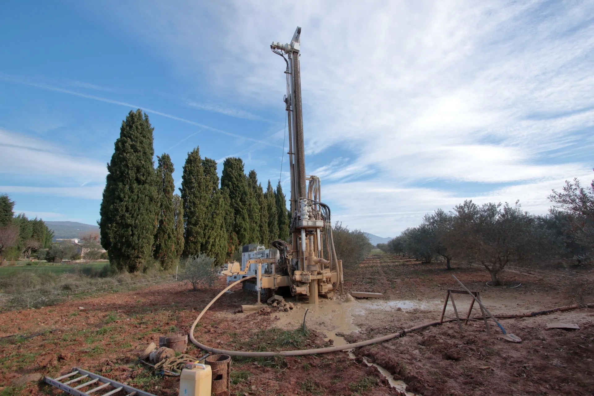
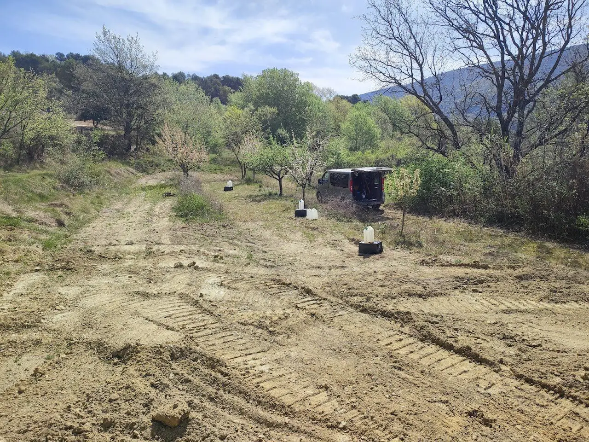

Votre expert en hydrogéologie et environnement
Études et conception d'ouvrages permettant l'assainissement, la gestion ou l'exploitation de la ressource en eau.
-
01
Assainissement non collectif des eaux usées
LS'Eau réalise les études de sols nécessaires à la mise en œuvre de ces ouvrages d'assainissement et vous accompagne jusqu'à l'obtention du visa de conformité délivré par les Services Publics d'Assainissement Non Collectifs (SPANC).
-
02
Forages d'eau
LS'Eau réalise un large panel d'études pour la définition de la faisabilité de forages que ce soit pour l'AEP, l'irrigation ou encore la géothermie sur nappe.
-
03
Gestion des eaux pluviales
LS'Eau étudie et dimensionne les dispositifs de gestion et d'assainissement des eaux pluviales au regard des règlements d'urbanisme locaux et des prescriptions de la Loi sur l'Eau.
-
04
Hydrométrie
LS'Eau réalise une large gamme de prestations d'hydrométrie pour l'évaluation des paramètres qualité et quantité des eaux qu'elles soient usées, souterraines ou superficielles.
-
05
Assistance à Maîtrise d'Ouvrage
Pour plus de sérénité, LS'Eau vous propose de consulter les entreprises à même de réaliser les travaux décrits dans nos études, de vous aider à faire le meilleur choix de prestataires, de piloter les travaux et de s'assurer de leur bonne exécution.
-
06
Dossiers réglementaires
LS'Eau identifie vos besoins et élabore pour vous les dossiers requis au titre des Codes Général des Collectivités Territoriales, de la Santé Publique, de l'Environnement, et du Code Minier.

Qui sommes-nous ?
Notre bureau d'études met ses compétences en hydrogéologie et en assainissement au service des particuliers, entreprises et collectivités. Notre équipe expérimentée a le savoir-faire nécessaire pour que nos clients soient pleinement satisfaits de notre travail.
-
Une équipe disponible
Nous nous tenons constamment à votre disposition pour répondre à vos questions.
-
Des prestations au plus près de vos besoins
Nous prêtons la plus grande attention à vos besoins, attentes et contraintes.
-
Des solutions rationnelles
Nos études de conceptions visent à la mise en œuvre d'ouvrages parfaitement fonctionnels et adaptés à vos projets tant du point de vue technique qu'économique.
Nos réalisations en images

Nos prestations vous intéressent ? Nous sommes là pour vous aider !
Nous voulons en savoir plus sur votre projet pour vous soumettre une offre technico-économique adaptée à vos besoins.